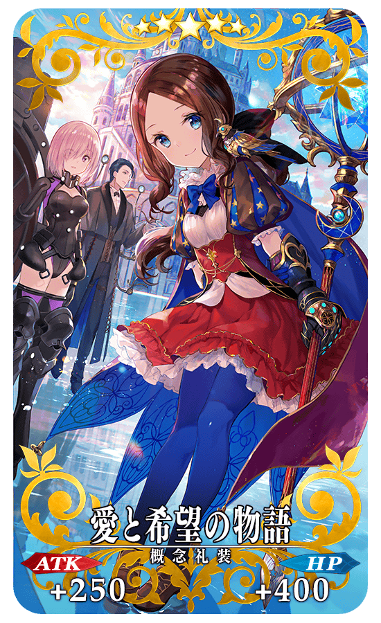
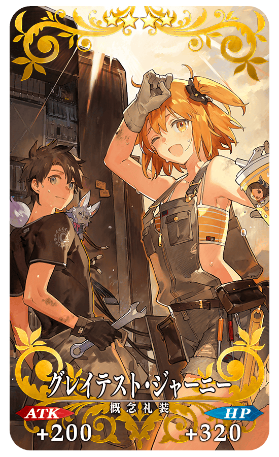
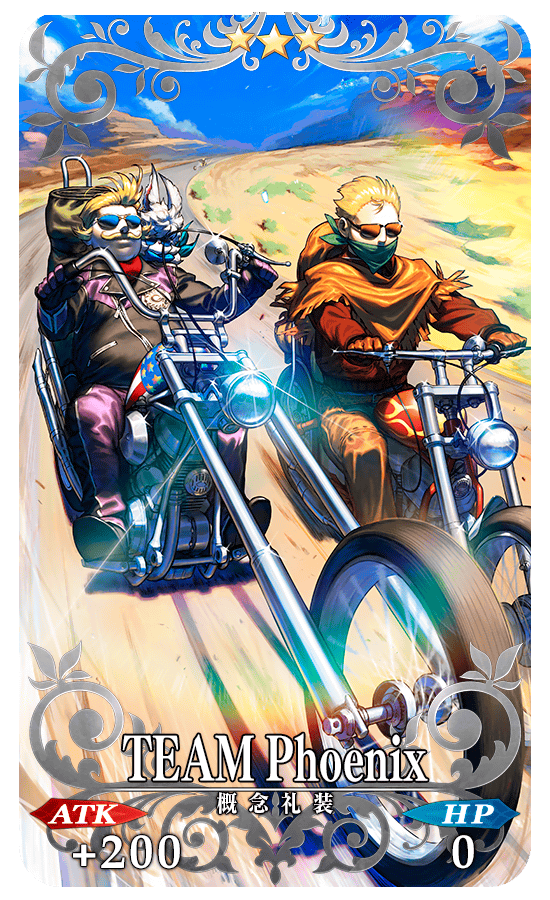
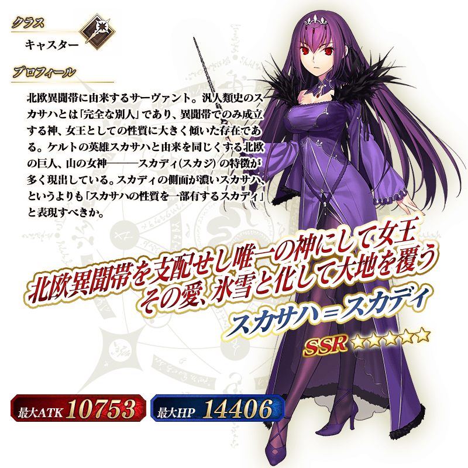

◆「1800萬DL記念Pick Up召喚」期間◆
期間:2019年11月13日(三) 20:00～11月20日(三) 11:59
舉辦期間限定「1800萬DL記念Pick Up召喚」！
為了記念1800萬DL突破「★5(SSR)斯卡哈＝斯卡蒂」以11月20日(三) 11:59的期間限定登場！
並且，於2018年的「Fate/Grand Order Fes. 2018 ～3rd Anniversary～特異點Pick Up召喚(每日交替)」登場的期間限定概念禮裝「★5(SSR)愛と希望の物語」「★4(SR)グレイテスト・ジャーニー」「★3(R)TEAM Phoenix」Pick Up！
Pick Up期間中，Pick Up對象從者與概念禮裝的出現機率提升！
詳情請在聖晶石召喚畫面左下的召喚詳細確認。
11次召喚中確定1張★4(SR)以上和確定1位★3(R)以上的從者！ ※確定★4(SR)以上包含從者和概念禮裝。
◆有關從者的注意◆
※「★5(SSR)斯卡哈＝斯卡蒂」在Pick Up期間結束後不會追加到故事召喚。
◆有關概念禮裝的注意◆
※「★3(R)TEAM Phoenix」在Pick Up期間中，也能靠友情點數召喚獲得。
※請注意自友情點數召喚抽出的「★3(R)TEAM Phoenix」在自動變還設定登錄★3(R)概念禮裝的情況，會變成自動變還的對象。


|  |
★★★★★SSR |
|  |
★★★★SR |
|  |
★★★R |

介紹「★5(SSR)斯卡哈＝斯卡蒂」的寶具演出！
在「Fate/Grand Order」官方網站內的公告中，以影片公開寶具演出，敬請確認。
其他還有，進行贈送1位★4(SR)從者的『TV動畫「Fate/Grand Order -絕對魔獸戰線巴比倫尼亞-」放送記念宣傳活動 第2彈』和有1800萬DL突破記念特別連續登入獎勵的「1800萬DL突破宣傳活動」同時舉辦！
關於詳情，請自下述橫幅確認。
■TV動畫「Fate/Grand Order -絕對魔獸戰線巴比倫尼亞-」放送記念宣傳活動 第2彈詳細情報

■「1800萬DL突破宣傳活動」詳細情報